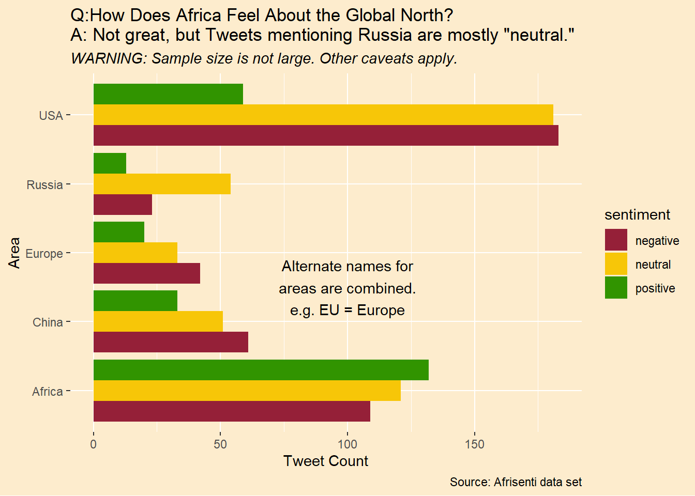
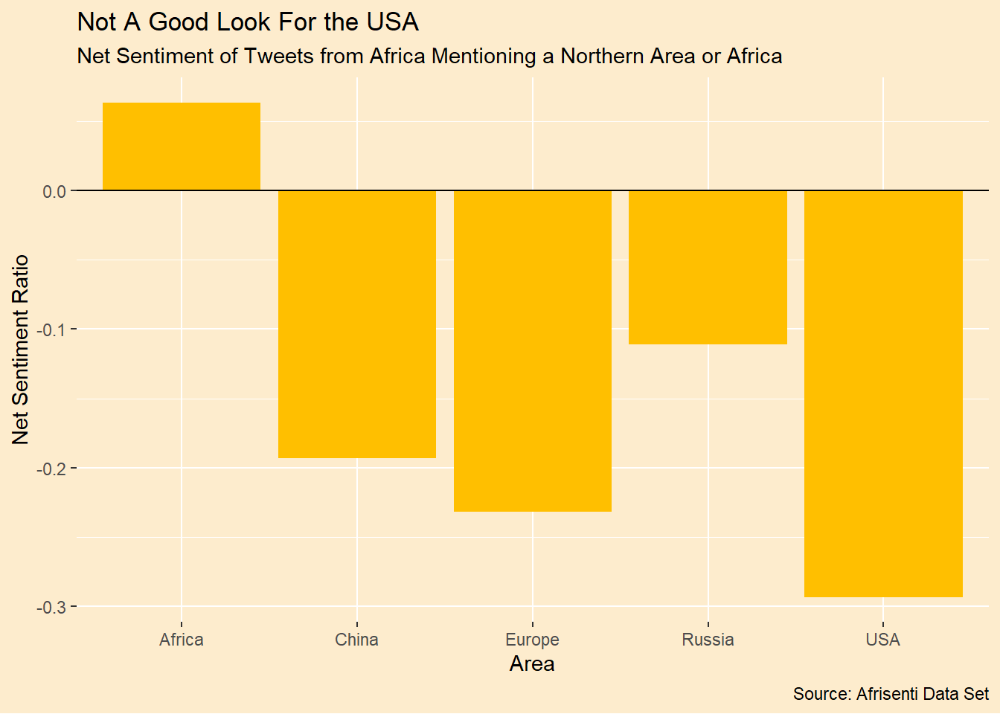

suppressPackageStartupMessages({
library(tidyverse)
library(tidytext)
})
# set up some chart defaults
tan1 <- "#FDECCD"
yellow1 <- "#FFBF00"
green1 <- "#007000"
theme_afri <- function(...){
# making a function allows passing further theme elements
ggplot2::theme(
plot.background = element_rect(fill = tan1, color = NA),
panel.background = element_blank(),
legend.background = element_blank(),
legend.box.background = element_blank(),
legend.key = element_blank(),
...
)
}
# the the previously translated tweets.
afrisenti_translated <-
readr::read_csv(
'https://raw.githubusercontent.com/apsteinmetz/tidytuesday/master/2023-02-28_african_language/data/afrisenti_translated.csv',
show_col_types = FALSE
) |>
mutate(lang = as.factor(assigned_long)) |>
mutate(sentiment = as.factor(label)) |>
mutate(intended_use = as.factor(intended_use)) |>
select(lang, tweet_num, sentiment, translatedText)Sentiment Analysis Using Google Translate (Pt. 4 - A Painful Sight)
twitter
tidytext
text mining
Introduction
Many of us in the U.S. have been surprised by the indifference many in less developed countries have shown about the Ukraine war. There has been much talk lately about how the “Global South” is feeling slighted by the rich countries in the northern hemisphere. The Afrisenti data set (Muhammad et al. 2023) is a collection of over 110,000 tweets from Africa. Its purpose is to train language sentiment models but maybe it can give us some insight into how Africans view different regions of the “Global North.”
For the final bite of the apple in this series, we’ll look at the translated tweets and tally the sentiment expressed in each tweet mentioning the U.S., Russia, China and/or Europe. What is the balance of sentiment expressed in this data set about each of these regions?
There are some major caveats with this social science experiment. First, while we are using the sentiments coded by native language-speaking curators, there is no stipulation that the sentiment toward a region and the sentiment of the tweet are the same. “I hate enemies of Russia” is a negative tweet, although positive toward Russia. Second, the sample size, while large overall, contains merely hundreds of tweets mentioning our regions of interest. We can’t claim this is representative. Finally, we don’t know the dates of the tweets. We know by some of the news events they reference they probably span the period from 2012 to sometime in 2022. The start of the Ukraine war at the beginning of 2022 and other World events may have shifted attitudes but we can’t split up the tweets by time.
Unlike our previous posts in this series, this one will be mercifully short.
Setup
We start by loading the packages and the file with the already translated tweets.
Data Wrangling
We’ll do some light data wranglng to bring some consistency to how areas are referred to. China and Russia are easy to spot. What does “us” mean? We capture a few variants but there will be some false positives and negatives, I suspect.
afrisenti_translated <- afrisenti_translated |>
# can we separate "US" from "us"?
# What about when the tweet is in ALL CAPS BECAUSE I LIKE TO SHOUT?
mutate(text = translatedText) |>
mutate(text = str_replace(text, "[a-z]+ US ", " united_states ")) |>
mutate(text = str_replace(text, "THE US", "THE united_states")) |>
mutate(text = str_replace(text, "U\\.S\\.A\\.", " united_states ")) |>
mutate(text = str_replace(text, "U\\.S\\.", " united_states ")) |>
mutate(text = str_replace(text, " USA ", " united_states ")) |>
mutate(text = str_replace(text, "^USA ", " united_states ")) |>
mutate(text = str_replace(text, "^US ", " united_states ")) |>
mutate(text = tolower(text)) |>
# it's all lower case from here
mutate(text = str_replace(text, "united states", "united_states ")) |>
# don't label "south america" as "south usa"
mutate(text = str_replace(text, "south america", "south_america")) |>
mutate(text = str_replace(text, " america", " united_states ")) |>
mutate(text = str_replace(text, "^america", "united_states ")) |>
# "American" "European" and "Russian" are stemmed to area name, not so Chinese
mutate(text = str_replace(text, "chinese", "china")) |>
mutate(text = str_replace(text, " eu ", " europe "))Let’s look at a few random tweets mentioning our areas of interest. We can compare text to the unaltered translatedText to see how well our wrangling worked.
afrisenti_translated |>
select(sentiment,text,translatedText) |>
filter(str_detect(text,"china|russia|united_states|europe")) |>
slice_sample(n=10)# A tibble: 10 × 3
sentiment text translatedText
<fct> <chr> <chr>
1 negative in addition to this, it is necessary to stop the re… In addition t…
2 negative don't touch united_states , jokes and conspiracy wi… Don't touch A…
3 negative intimidating the people is a policy practiced by ri… Intimidating …
4 neutral russian foreign minister: kane is making positive p… Russian Forei…
5 neutral a disappointing blow to the far-right candidate, co… A disappointi…
6 neutral dr. bashiru will discuss four issues with united_s… Dr. Bashiru w…
7 negative the grandchildren of the generation that followed e… The grandchil…
8 neutral a senior delegation led by ethiopia's minister of n… A senior dele…
9 positive wow your shoes are nice responses united_states ns … wow your shoe…
10 positive in the marathon held in china, ethiopian athletes w… In the marath…Split the Tweets into Words and Tally Results
As sort of a control, let’s include “Africa” as one of our areas.
areas <- c("united_states","europe","russia","china","africa")
tokens <- afrisenti_translated %>%
unnest_tokens(Area, text ) %>%
count(Area,sentiment, sort = TRUE) |>
filter(Area %in% areas) |>
# cosmetic plot improvements
mutate(Area = str_to_title(Area)) |>
mutate(Area = str_replace(Area,"United_states","USA"))Results: The Higher Up the Tree the Monkey Climbs, the More Its Ass Shows
Sadly, among tweets mentioning the Global North, there are more tagged with negative than positive sentiment. In contrast, the balance of sentiment is positive in tweets mentioning “Africa” (as opposed to particular African countries). It’s perhaps not surprising the the United States is the most mentioned area. It aslo has the worst balance of sentiment. Alone among the areas, Russia has more neutral sentiment tweets than any other sentiment.
col_set <- c("#952038","#F7C608","#319400")
# feelings about world powers
tokens |>
ggplot(aes(Area,n,fill = sentiment)) +
geom_col(position = "dodge") +
scale_fill_manual(values = col_set) +
labs(title = 'Q:How Does Africa Feel About the Global North?\nA: Not great, but Tweets mentioning Russia are mostly "neutral."',
subtitle = "WARNING: Sample size is not large. Other caveats apply.",
y = "Tweet Count",
caption = "Source: Afrisenti data set") +
coord_flip() +
annotate("text",x = 2.5,y = 100,label = "Alternate names for\nareas are combined.\ne.g. EU = Europe") +
theme_afri(plot.subtitle = element_text(face = "italic"))
We can calculate a net sentiment ratio as the positive minus negative divided by the sum of all tweets. This shows in stark terms how the balance of sentiment is worse for the United States than the other regions we are looking at. Further, both while both Russia and China are viewed negatively, on balance, they are viewed less poorly than both the USA and Europe.
tokens |>
pivot_wider(names_from = "sentiment",values_from = "n") |>
mutate(net_sentiment_ratio = (positive - negative)/(positive+negative+neutral)) |>
ggplot(aes(Area,net_sentiment_ratio)) + geom_col(fill = yellow1) +
geom_hline(yintercept = 0) +
theme_afri() +
labs(y = "Net Sentiment Ratio",
title = "Not A Good Look For the USA",
subtitle = "Net Sentiment of Tweets from Africa Mentioning a Northern Area or Africa",
caption = "Source: Afrisenti Data Set")
Conclusion
While I think these results are truly interesting, please don’t read too much into them. This is not a carefully designed social science research project. The results do align with our intuition gleaned from recent news about the “Global South” vs. the “Global North.” Given that this data set spans roughly ten years, this tension is not a new phenomenon.
The Afrisenti data set is a fascinating corpus and there are many more explorations we might do in it. As I write, it looks like Twitter is going to put its academic API behind a paywall. This is quite sad and will stifle the kind of important explorations serious researchers are able to do, not to mention curious amateurs like us.
References
Muhammad, Shamsuddeen Hassan, Idris Abdulmumin, Abinew Ali Ayele, Nedjma Ousidhoum, David Ifeoluwa Adelani, Seid Muhie Yimam, Ibrahim Sa’id Ahmad, et al. 2023. “AfriSenti: A Twitter Sentiment Analysis Benchmark for African Languages.” https://doi.org/10.48550/ARXIV.2302.08956.